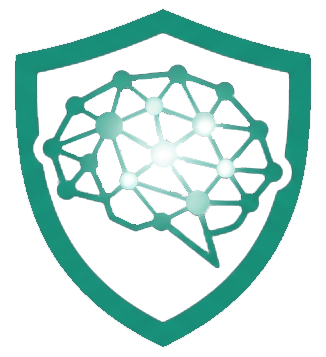
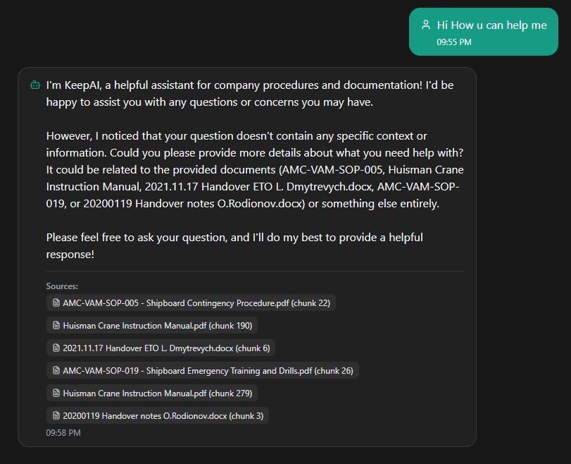
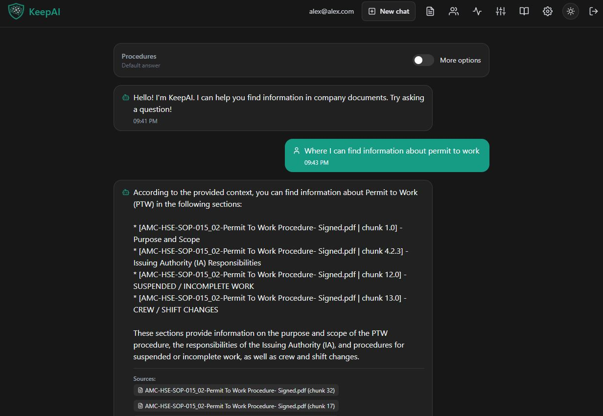
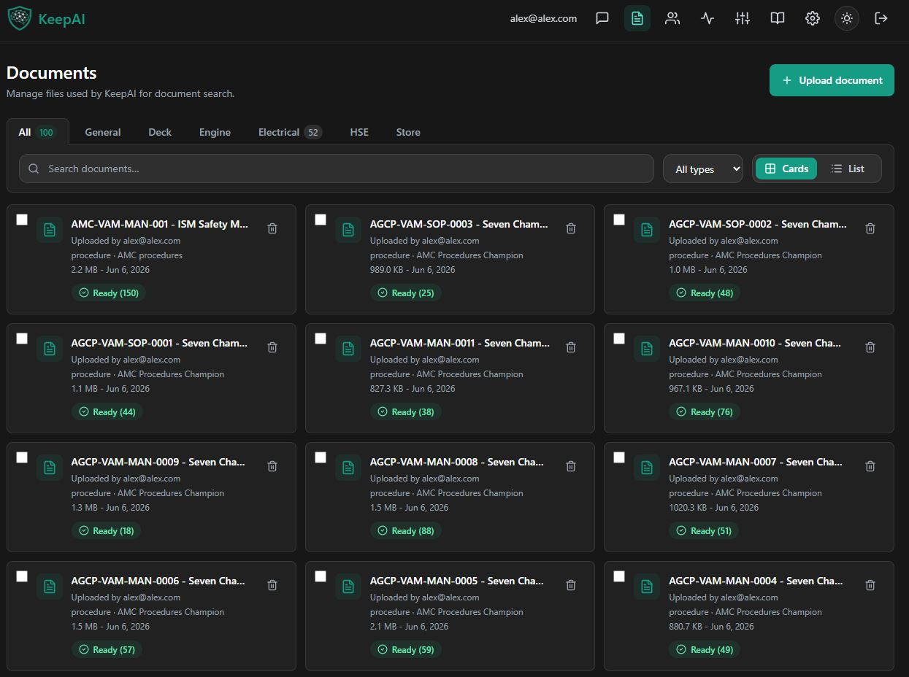
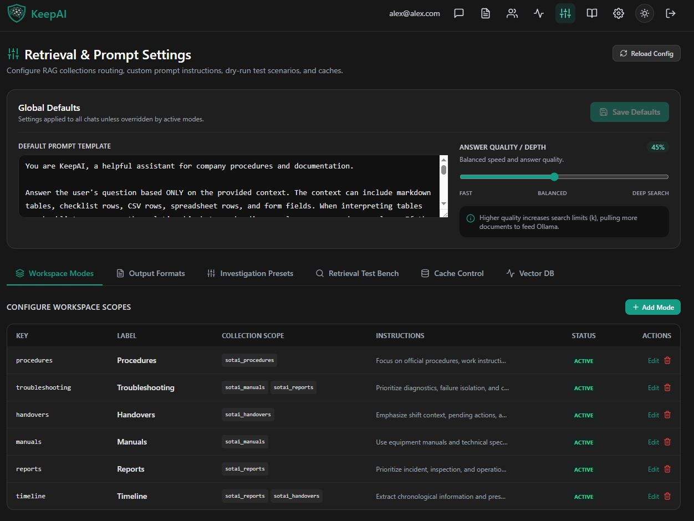
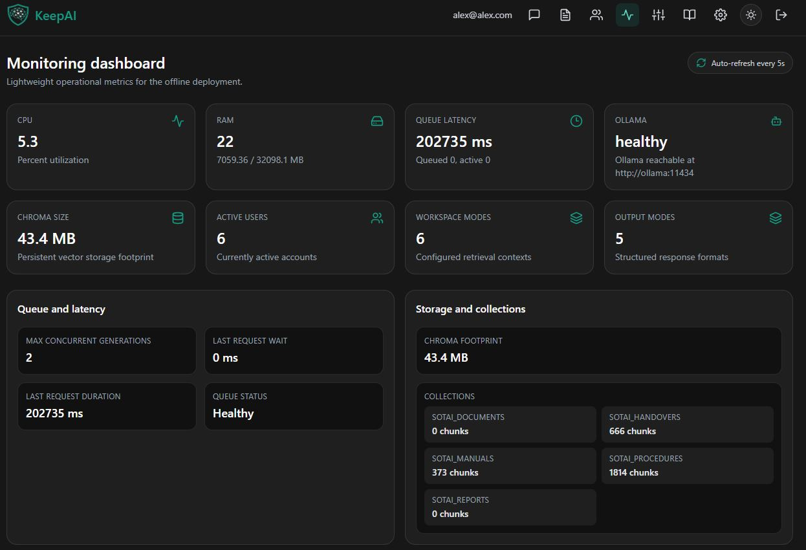
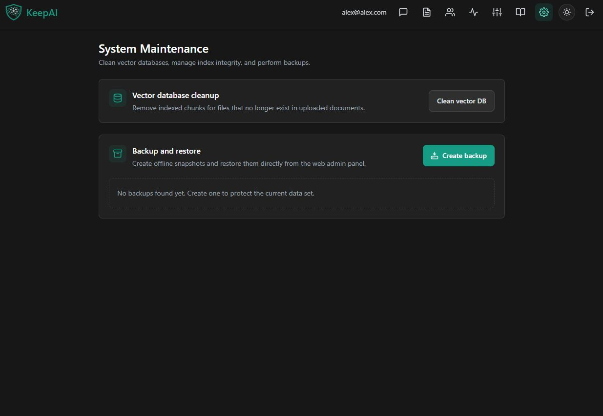

An elite, self-hosted RAG platform built for private, offline intelligence. Upload your procedures, reports, and manuals once. Get instant conversational answers with zero data leaving your server.
Your organization already possesses all the technical knowledge it needs. The core issue is that this invaluable knowledge remains buried inside thousands of complex PDFs, Word documents, handover files, and manuals.
The knowledge is invisible. When critical decisions are required on night watches or during maintenance outages, searching for answers leads to massive friction and downtime.
Critical data is scattered across shared drives, handover folders, and static 300-page manuals.
Personnel waste up to 20 minutes reading document directories just to find one operational answer.
When manual searching is too slow, crew members rely on guesswork, risking safety incidents.
While businesses are eager to adopt Retrieval-Augmented Generation (RAG) to improve decision-making and productivity, standard solutions depend on the public cloud.
Pasting private compliance files, HSE reports, and mechanical drawings into external AI models (like ChatGPT or Claude API) creates a critical risk of data leaks and strict regulatory compliance violations.
Uploading corporate operational procedures violates safety standards, ISM requirements, and internal IP guidelines.
Offshore vessels and secure facilities cannot establish stable, low-latency connections to external cloud models.
Standard systems charge per-token fees, resulting in soaring, unpredictable API costs as usage scales fleet-wide.
SOTA KeepAI is a self-hosted, offline AI knowledge assistant. Designed as an elite local RAG application, it functions entirely behind your secure firewall on local vessel hardware or server PCs.
We designed KeepAI to align directly with three operational pillars: absolute data sovereignty, high-accuracy math guardrails, and measurable efficiency.
Local execution ensures proprietary files never leave the machine. Zero cloud dependency means zero leak risk.
Mathematically bound to answer only using your uploaded documents. If the answer is not in the text, it says so.
Search times plunge from hours of reading to a three-second local chat, directly driving team performance KPIs.
Users interact with KeepAI just like they would chat with a senior engineer or supervisor. They ask natural questions in plain language and get instant, technical responses.

Trust is the absolute core of technical operations. SOTA KeepAI does not invent answers or guess procedures.

Industrial operations require structured information, not just a plain list of files. KeepAI indexes files with clear context mapping.

KeepAI provides administrators with precise knobs to adjust how the LLM and RAG engine extract and synthesize answers.

IT administrators have access to robust tools to maintain system health, monitor hardware usage, and ensure database reliability.


KeepAI is packaged in a production-ready container stack, deployable in less than one hour using standard Docker tools.
No internet connection required. Runs perfectly on standard shipboard servers or PC hardware. Zero cloud dependencies, zero external licensing requirements.
KeepAI transforms static document archives into an active, conversational, safety-critical resource for your crew and office teams.
Average search time. Crash from 20 minutes to seconds.
All files stay behind your firewall. Absolute security.
Local execution means zero scaling and usage bills.
You own the system completely. No vendor lock-in. No cloud database fees. Pure local intelligence.
We are ready to deploy a local pilot system using a sample of your actual technical manuals and procedures to prove speed, safety, and citation accuracy.